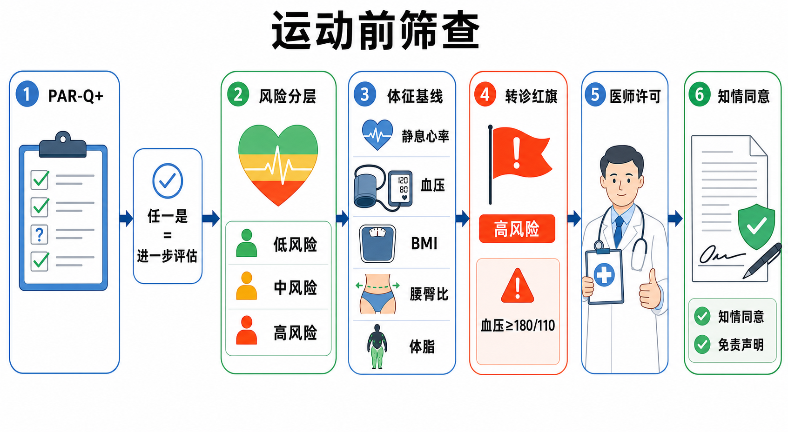

Day 31 · PAR-Q+与医学筛查
训练处方前的安全闸门：先筛查风险、量基线体征、判断是否转诊，再签署合适文件。
一句话总结
PAR-Q+ 与医学筛查像训练前的安检：不是为了吓退客户，而是先找红旗、分风险、定边界，确保训练从安全起点开始。

看图顺序：先做 PAR-Q+ 自筛，再看风险分层和体征基线；出现高风险或异常体征时，先医师许可，再进入训练处方。
核心要点
- PAR-Q+：运动前基础自筛问卷，任一关键问题答“是”就要进一步评估。真实例子
字面意思
PAR-Q+ = Physical Activity Readiness Questionnaire Plus，中文可理解为“身体活动准备问卷加强版”。它问心血管症状、疾病史、药物、疼痛和医生限制。
大白话
它像健身房入口的安检门。大多数人能直接通过；一旦响铃，不代表一定不能练，而是不能按普通客户流程直接加量。
为什么重要
教练不是医生。PAR-Q+ 把可能需要医师判断的问题提前暴露，避免胸痛、失控高血压、严重代谢病等客户被误当成普通新手。
客户说“爬两层楼会胸闷，而且医生提醒过心脏问题”。PAR-Q+ 出现阳性答案，下一步不是开 HIIT，而是记录并建议医学评估。
常见误解❌以为 PAR-Q+ 是形式文件，随便签一下。✅它是训练前决策工具，阳性答案会改变训练权限和转诊流程。
- ACSM风险分层：把客户按疾病、症状和风险因素分成低、中、高风险。底层机制
风险分层看三类信息：已知心血管、肺部、代谢疾病；是否有胸痛、晕厥、异常气短等症状；风险因素数量，如年龄、吸烟、血压、血脂、血糖、肥胖、家族史、久坐。
训练含义低风险客户可从低到中等强度开始；中风险客户需要更谨慎地进阶；高风险或有症状客户要先获得医师许可，尤其不能直接安排高强度测试或训练。
常见误解分层 典型线索 教练动作 低风险 无已知疾病、无症状、风险因素少 可开始保守训练，记录基线 中风险 无症状，但风险因素较多 低强度起步，密切监测反应 高风险 已知疾病或可疑症状 先转诊或要求医师许可 ❌以为“看起来年轻能动”就是低风险。✅风险看症状、疾病史和指标，不看外表自信程度。
- 体征基线：静息心率、血压、BMI、腰臀比、体脂是训练前的起点记录。真实例子
字面意思
基线就是正式干预前的“原始坐标”。以后说改善、异常、疲劳或风险，都要和它对比。
大白话
像出发前给车拍照、记油量和胎压。没有基线，后来车况变好变坏都只能靠感觉猜。
为什么影响训练
静息心率和血压影响有氧强度选择；腰臀比和体脂提示代谢风险；BMI 只是粗筛，不能单独判断体成分。
客户静息血压 168/96，没有症状也不能忽略。可先建议医学确认、低强度活动和生活方式干预，避免一上来做极限测试。
常见误解❌以为体脂率是唯一重要指标。✅安全筛查先看生命体征和疾病风险，体成分只是其中一块。
- 转诊红旗：高风险或体征异常时，训练前先医师许可。底层机制
红旗不是“教练不会带”，而是某些状况可能在运动时放大危险。血压极高、胸痛、晕厥、未控制代谢病、急性发热或不明原因气短，都不该用训练硬扛。
考试锚点静息血压 ≥180/110 mmHg 属于必须高度重视的异常线索。此时不要做最大强度测试，也不要靠“热身看看”来试探。
训练含义转诊语气要专业：说明发现了需要医学确认的风险，暂停高强度训练，建议客户联系医生。教练可保留沟通记录和测量记录。
常见误解❌以为客户签免责声明后就能继续练。✅免责声明不能把医学禁忌变安全，也不能替代医师许可。
- 知情同意：告知训练收益、风险和替代选择，让客户明白后再同意。真实例子
字面意思
Informed consent = 知情同意。重点是“被告知后同意”，不是只签名字。
大白话
像上车前告诉乘客路线、可能颠簸、可以中途停。客户知道风险边界，才算真正同意。
为什么重要
它保护客户自主权，也保护教练的专业流程。训练可能有延迟性酸痛、疲劳、跌倒或旧伤反应，需提前说明。
第一次训练前，教练说明会做体征测量、基础动作筛查和低强度起步；若出现胸痛、头晕、异常气短，训练会停止并建议就医。
常见误解❌以为签了字就等于客户承担所有后果。✅知情同意是沟通和授权，不是甩锅。
- 免责声明：限制追责范围，但不能免除教练疏忽或违规责任。底层机制
Waiver = 免责声明或弃权书。它通常说明客户理解运动有风险，并在法律上限制部分追责。但它不能让错误操作变正确，也不能覆盖明显疏忽。
对比表
常见误解文件 核心目的 不能替代什么 知情同意 告知风险、收益、流程，获得同意 不能替代医学评估 免责声明 说明风险承担和责任边界 不能替代专业照护义务 医师许可 医生确认客户可参与运动或限定条件 不能被教练口头判断替代 ❌以为免责声明越长越安全。✅更关键的是筛查、记录、转诊、循序渐进这些流程本身。
- 风险因素计数：把零散病史变成可判断的训练入口。底层机制
风险因素不是单个吓人的标签，而是累计风险。年龄、吸烟、高血压、血脂异常、糖尿病前期、肥胖、家族早发心血管病、久坐等，越多越需要保守。
真实例子一个 52 岁、久坐、吸烟、血压偏高、腰围大的客户，即使没有胸痛，也不该按年轻低风险客户做高强度冲刺测试。
训练含义计数后要落到行动：起始强度更低、热身更长、监测心率和主观用力、避免憋气硬拉极限、必要时先医师确认。
常见误解❌以为没有疾病诊断就一定安全。✅风险因素聚集本身就会改变训练起点和监测强度。
- 筛查流程：先问、再量、再分层、再决定训练或转诊。训练含义
第一步
问：PAR-Q+、疾病史、症状、药物、医生限制、近期受伤和训练经验。
第二步
量：静息心率、血压、身高体重、BMI、腰臀比、体脂或围度，记录日期和条件。
第三步
判：低中高风险、是否有红旗、是否需要医师许可，再决定测试和训练强度。
安全流程不是拖慢开课，而是减少后续返工。筛查清楚后，Day30 FITT-VP 才能真正成为“合适的处方”。
常见误解❌以为评估越复杂越专业。✅该问的问、该量的量、该转诊的转诊，比堆很多无关测试更专业。
常见误区
❌很多人以为客户能走进健身房就能直接训练。✅运动前筛查是训练介入的一部分，不是可选行政流程。
❌很多人以为 PAR-Q+ 有“是”就永远不能练。✅它代表需要进一步评估或医师许可，之后可按限制条件安全开始。
❌很多人以为免责声明能解决全部法律和安全问题。✅真正降低风险靠规范筛查、清楚记录、合理进阶和必要转诊。
记忆口诀
“先问 PAR-Q，体征量清楚；风险分低中高，红旗先转诊；同意讲风险，免责不甩锅。”
翻转卡复习
实操关联
- 新客户首课：先完成 PAR-Q+、病史、症状、药物和目标沟通，再安排基础体征和动作筛查。
- 久坐减脂客户：风险因素多时先从低冲击有氧和基础力量开始，不急着上 HIIT。
- 高血压客户：记录静息血压，避免憋气、极限测试和突然高强度；异常明显时先转诊。
- 中老年客户：更重视心血管症状、药物、跌倒史和医生限制，进阶幅度要小。
- 教练记录：保留问卷、体征、转诊建议和客户确认，比事后凭记忆解释可靠得多。
- 训练处方：只有通过筛查后，Day30 的 FITT-VP 才能安全落地。